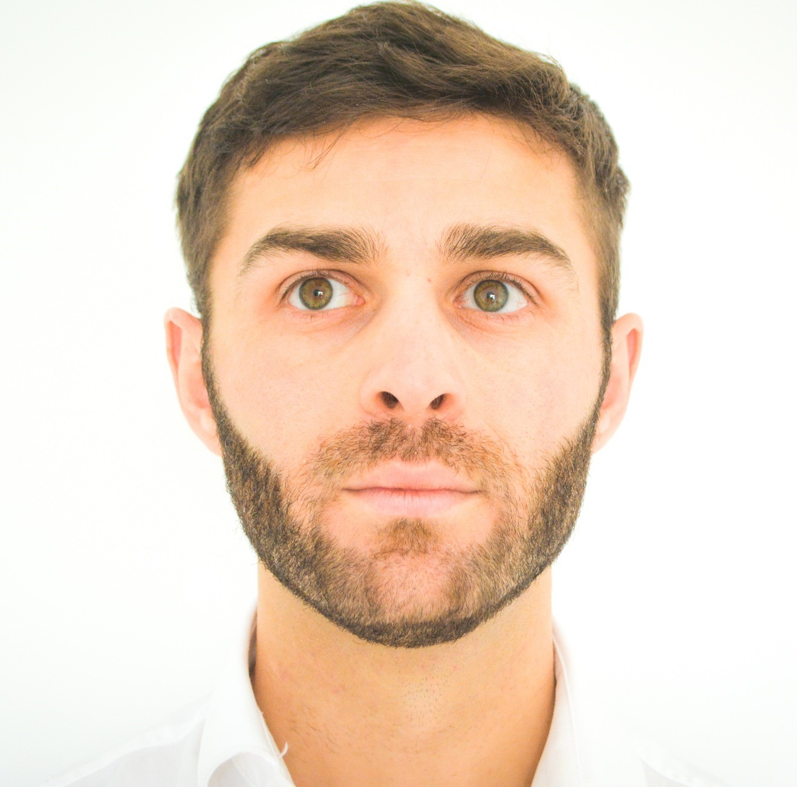
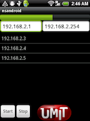
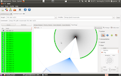

LBS
Hello, I'm Bastião.
CTO of BMD software.
My passionate is
I'm enthusiastic to build innovative software solutions, combining simplicity with high-end technologies, focusing on critical areas, such as, healthcare. One of my primary responsabilities is to help and provide early feedback on the usabitity,
design and architecture capabilities, bridging the gaps with the business.

Projects
Current involved projects
iPATH
An Intelligent Network Center for Digital Pathology A fundamental contribution to mitigating this problem is to develop technologies and information systems that allow the distributed digitization of samples and subsequent We b sending to an archive center where a group of experts remotely reviews cases, according to service policies and using tools intelligent decision support systems that optimize the diagnostic and reporting process.
Role: Tecnhical Director
SIARC
A platform which intends to facilitate the workflow of COVID-19 testing management.
The goal of this project is to provide laboratories with a higher capacity to test citizens and fasten the presentation
of results to everyone involved, through the creation of a decision support system.
Role: Tecnhical Director
IMAGE-IN
Imaging infections: integrated multiscale visualization of infections and host response.
To develop a collaborative cloud-based system able to collect pathology imaging studies, extract and indexes features and to develop improved data analysis algorithms for the 3D visualization of infected
cells using 3D image stacks.
Role: PhD co-supervisor
Past participated projects
MammoAssist
MammoAssist - early diagnostic of breast cancer, to insert on the market a tool that helps in the early diagnostic of breast cancer. The MammoAssist project suggests creating a tool capable of helping professionals in the early diagnosis of breast cancer, through the automatic detection of microcalcifications in mammographies.
Role: Software Architecture
NetPathology
ACTTIVATe - Support innovation in SMEs and foster the smart reindustrialization of Europe. BMD was a partner in ACTTIVATe leading one subproject in medical imaging area. SME parner with medical imaging project @ ACTTIVATe - H2020 n.º 691473.
Role: PI
URL: http://acttivate.eu/
MedBioinformatics- H2020-HEALTH-634143
Creating medically-driven integrative bioinformatics applications focused on oncology, CNS disorders and their comorbidities. We had create and promote software development guidelines in translational bioinformatics.
Role: Researcher
EMIF
The EMIF project aims to develop a common information framework of patient-level data that will link up and facilitate access to diverse medical and research data sources, opening up new avenues of research for scientists. To provide a focus and guidance for the development of the framework, the project will focus initially on questions relating to obesity and Alzheimer’s disease.
I have been in charge of developing the EMIF Catalogue which is an on-going work of the IMI-funded research project EMIF (European Medical Information Framework). The main idea of Catalogue will be aggregate summarized data from disperse databases. Furthermore, I'm working in integration of this component with other components of the EMIF Platform.
Another tool, that I have been involved is "Taska", is a collaborative and easily extendable workflow-oriented system designed to manage processes of data extraction and data handling.
EMIF Catalogue - https://emif-catalogue.eu/
Open Source and other iniciatives
Dicoogle
Dicoogle is an Open Source platform for medical image. It is a PACS that replaces the traditional PACS database by an indexing and retrieving engine.
The new paradigm introduced with the Dicoogle index engine is that it can potentiate queries over a set of distributed DICOM repositories, which are logically indexed as a single federated unit. To implement this and other DICOM services in a peers’ federation it is used a Peer-To-Peer (P2P) network.
Steve
Steve is a visual stimulation application designed to help all those who suffer from cerebral visual impairment. With Steve's training programs, everyone will realize that the world is much more beautiful when discovered.
Open Monitor
Open Monitor is a project developed by Umit Project, and was started during Google Summer of Code 2011. Its goal is to provide real time data about internet censorship and restrictions world wide. This is a free service that runs on top of our free and open source software, and we’re working hard on it in the hope that it will be useful for people facing these issues anywhere in the world.
Umit
Umit Project is an open source international software organization in Computer Networking. The project was born in 2005 in Nmap's Organization and it became an independent organization in 2007. The aims of Umit Project is to make life easier for network
administrators and for other users that want to be aware of what is happening in their networks.
Umit Project currently have two main concerns in Networking:
Network Scanning and Packets Manipulation/Sniffing. Umit's Network Scanner is a graphical interface that offers network mapping capabilities, discovering of hosts, services and track changes in the network.
It is also valid for Bluetooth Network Devices.
 
At the other hand, the Packet Manipulation/Sniffing have other goals: create protocols, packets, send packets, sniffing, protocol testing, help on network software development tests, and other very cool features available throught a backend library and a nice frontend. Umit Project has being supported by Google Summer of Code since 2005, and never failed a participation until this year. Umit Network Scanner has even appeared in The Bourne Ultimate movie, helping the CIA to crack into a journalist's account to find out where was he going to.Google Summer of Code
Google Summer of Code is a global program that offers student developers stipends to write code for various open source software projects. I worked in GSoC since 2007 mainly with Nmap and Umit projects. In this section I present the tasks I performed
every year.
- 2009: In the GSoC 2009 I mentored 2 students doing an Security Audit Framework and a Sniffing/Inject network packets library.
- 2008: In the GSoC 2008 new features comming for Umit Project.
- 2007: In the GSoC 2007 Interface Editor was accepted by Umit Project.
Publications
Journal papers
Rui Lebre, Eduardo Pinho, Rui Jesus, Luís Bastião, Carlos Costa, "Dicoogle Open Source: The Establishment of a New Paradigm in Medical Imaging", Journal of Medical Systems volume 46, Article number: 77 (2022) [IF 2021: 4.46]
Y. Gupta, C. Costa, E. Pinho, LLuís Bastão Silva, "DICOMization of Proprietary Files Obtained from Confocal, Whole-Slide, and FIB-SEM Microscope Scanners", Sensors. 2022. (DOI: 10.3390/s22062322) [IF 2021: 3.847]
João Rafael Almeida, Luís Bastão Silva, Isabelle Bos, Pieter Jelle Visser, José Luís Oliveira, "A methodology for cohort harmonisation in multicentre clinical research", Informatics in Medicine Unlocked, 2021 [IF 2020: 3.37]
Rui Lebre, Luís Bastião Silva, Carlos Costa, "A Cloud-Ready Architecture for Shared Medical Imaging Repository", Journal of Digital Imaging volume 33, pages1487–1498, 2020 [IF 2019: 3.697]
José Luís Oliveira, Alina Trifan, Luís A.Bastião Silva, "EMIF Catalogue: A collaborative platform for sharing and reusing biomedical data", International Journal of Medical Informatics, 2019 [IF 2017: 2.957]
Milton Santos, Luís Bastião Silva, Augusto Silva, Nelson Rocha. "DICOM Metadata Analysis for Population Studies", International Journal of E-Health and Medical Communications, vol. 10, no. 1, p. 1-17, 2019
Luís Bastião Silva, Alina Trifan, José Luís Oliveira. "MONTRA: An agile architecture for data publishing and discovery". Computer Methods and Programs in Biomedicine, vol. 160, p. 33-42, April 2018 [IF 2017: 2.674]
Luís Bastião Silva, RC Jimenez, N Blomberg, JL Oliveira, "General guidelines for biomedical software development", F1000Research, 2017
T. Godinho, R. Lebre, L. Bastião and C. Costa, "An efficient architecture to support digital pathology in standard medical imaging repositories ". Journal of Biomedical Informatics, Volume:71:190-197. Elsevier. 2017.
F. Valente, L. Bastião, T. Godinho, C.Costa. "Anatomy of an Extensible Open Source PACS. ", Journal of Digital Imaging. 2015.
Pedro Lopes, Luís Bastião Silva, José Luís Oliveira. "Challenges and Opportunities for Exploring Patient-Level Data. BioMed Research International ", vol. 2015, no. ID 150435, p. 11 pages, August 2015 (IF 2013: 2.706)
Luís A. Bastião Silva, Luís S. Ribeiro, Milton Santos, Nuno Neves, Dulce Francisco, Carlos Costa, José Luis Oliveira, "Normalizing Heterogeneous Medical Imaging Data to Measure the Impact of Radiation Dose" DOI 10.1007/s10278-015-9805-5, Journal of Digital Imaging, 2015
Tiago Marques Godinho, Carlos Viana-Ferreira, Luís A. Bastião Silva, Carlos Costa, "A Routing Mechanism for Cloud Outsourcing of Medical Imaging Repositories", IEEE Journal of Biomedical and Health Informatics (J-BHI). 2014.
L. Bastião, S. Campos, C. Costa, and J. L. Oliveira, "Sensor-based architecture for medical imaging workflow analysis", Journal of Medical Systems, Springer. 2014
L. Bastião, R. Pinho, L. Ribeiro, C. Costa, J. L. Oliveira, "A centralized platform for geo-distributed PACS management", Journal of Digital Imaging. 2013.
L. Bastião, C. Costa and J. L. Oliveira, "A common API for delivering services over multi-vendor cloud resources", Journal of Systems and Software. Elsevier. 2013.
L. Bastião, C. Costa and J. L. Oliveira, "DICOM Relay over the Cloud", International Journal of Computer Assisted Radiology and Surgery. Springer, 2012.
L. Bastião, C. Costa, and J. L. Oliveira, "A PACS archive architecture supported on Cloud services", International Journal of Computer Assisted Radiology and Surgery. Springer, 2011.(DOI: 10.1007/s11548-011-0625-x)
Carlos Costa, Luís Bastião Silva, Carlos Ferreira, Luís S. Ribeiro, Augusto Silva, José Luís Oliveira. "Dicoogle - An Open Source Peer-to-Peer PACS" in Journal of Digital Imaging.
Conference papers
Rui Jesus, Luís Bastião Silva, and Carlos Costa. "Quantitative Measurements Extraction and Annotation Optimization in Whole Slide Imaging". 2022 IEEE International Symposium on Medical Measurements and Applications (MeMeA), Messina, Italy. 2022.
Tibério Baptista, Rui Jesus, Luís Bastião Silva, and Carlos Costa. "Scalable Digital Pathology Platform over Standard Cloud Native Technologies", 27th IEEE Symposium on Computers and Communications (ISCC 2022), Rhodes, Greece. 2022.
Rui Jesus, Yubraj Gupta, Luís Bastião Silva, and Carlos Costa. "Vendor Neutral Cloud Platform for 4D Digital Pathology", 2nd IEEE Conference on ICT Solutions for eHealth (ICTS4eHealth 2022), Rhodes, Greece. 2022.
Rui Jesus, Luís Bastião Silva, and Carlos Costa. "Intra-Query Parallelism for a Scalable and Responsive Web-Based Digital Pathology Viewer". 32nd Medical Informatics Europe (MIE 2022), Nice, France. 2022.
Tibério Baptista, Luís Silva, and Carlos Costa. "Highly scalable medical imaging repository based on Kubernetes". 2021 IEEE International Conference on Bioinformatics and Biomedicine (IEEE BIBM 2021) , Houston, USA. 2021
Rui Lebre, Luís Bastião Silva, and Carlos Costa. "Decentralizing the storage of a DICOM compliant PACS". 2021 IEEE International Conference on Bioinformatics and Biomedicine (IEEE BIBM 2021) , Houston, USA. 2021.
Yubraj Gupta, Carlos Costa, Eduardo Pinho, and Luís Bastião Silva. "Improving the Visualization and Dicomization process for the Stacked Whole Slide Imaging". 2021 IEEE International Conference on Bioinformatics and Biomedicine (IEEE BIBM 2021), Houston, USA. 2021
Pedro Vilares, João Ferreira, Luís Bastião Silva and Augusto Silva. "A high specificity deep learning approach with focus on breast cancer screening". 2021 IEEE International Conference on Bioinformatics and Biomedicine (IEEE BIBM 2021), Houston, USA. 2021
Yubraj Gupta, Eduardo Pinho, Luís Bastião and Carlos Costa, "A DICOM Standard Pipeline for Microscope Imaging Modalities". IEEE Conferance on ICT Solutions for EHealth (ICTS4eHealth 2021), Athens, Greece. 2021.
Yubraj Gupta, Carlos Costa, Eduardo Pinho, Luís Bastião, Shibarjun Mandal and Ute Neugebauer. "Dicomization of LSM fluorescence composite microscopic image with its bioimaging information". IEEE 34th International Symposium on Computer Based Medical Systems (CBMS 2021). Aveiro, Portugal. 2021.
S. Mandal, A. Tannert, V. Hoerr, C. Geppert, L. Carvalho, B. Löffler, L.B. Silva, U. Neugebauer "Comparative Analysis Of H&E And Fluorescence Images Of Bones In Experimental Hematogenous Osteomyelitis Mouse Models", Focus on Microscopy (online), 2021
Rui Lebre, Luís Bastião and Carlos Costa, "An architecture for decentralized storage in medical imaging repositories", IEEE-EMBS International Conference on Biomedical and Health Informatics (BHI), 2021
Joao Rafael Almeida, Eriksson Monteiro, Luís Bastião Silva, Alejandro Pazos Sierra, José Luís Oliveira, "A Recommender System to Help Discovering Cohorts in Rare Diseases", IEEE 33rd International Symposium on Computer-Based Medical Systems (CBMS), 2020.
Rui Lebre, Luís Bastião and Carlos Costa, "An Accounting Mechanism for Standard Medical Imaging Services", IEEE 6th Portuguese Meeting on Bioengineering (ENBENG), Lisbon, Portugal, 2019
João R. Almeida, Tiago Godinho, Luis Bastião Silva, Carlos Costa, and Jose L. Oliveira. " Services Orchestration and Workflow Management in Distributed Medical Imaging Environments", IEEE 31st International Symposium on Computer-Based Medical Systems (CBMS), Karlstad, Sweden, 2018
Olga Fajarda, Luis Bastião Silva, Peter R. Rijnbeek, Michel Van Speybroeck, José Luis Oliveira, "A Methodology to Perform Semi-automatic Distributed EHR Database Queries", 11th International Conference on Health Informatics, Funchal, Portugal, 2018
Rui Lebre, Luis Bastião Silva, Carlos Costa - "A performant and fully DICOM compliant Web PACS for Digital Pathology", CARS 2018, Berlin, Germany, 2018
Fabio Maia, Luis Bastião Silva, José Luis Oliveira - "Biomedical informatics - How to choose the best tool for each task", Gothenburg, Sweden, MIE 2018
Rui Lebre, Luis Bastião Silva, Carlos Costa - "Shared Medical Imaging Repositories", Gothenburg, Sweden, MIE 2018
Liliana Tribuna, Luís Bastião Silva, Carlos Costa, Augusto Silva, "A study to understand the acceptance of DICOM Structured Reports on Breast Imaging", CENTERIS - International Conference on ENTERprise Information Systems / ProjMAN - International Conference on Project MANagement / HCist - International Conference on Health and Social Care Information Systems and Technologies, CENTERIS / ProjMAN / HCist 2017, 8-10, November 2017, Barcelona, Spain
Milton Santos, Luis A. Bastiao Silva, Augusto Silva, Nelson Rocha. "DICOM Metadata Analysis for Population Characterization: A Feasibility Study", International Conference on ENTERprise Information Systems/International Conference on Project MANagement/International Conference on Health and Social Care Information Systems and Technologies, CENTERIS/ProjMAN / HCist, 2016
Eriksson Monteiro, Carlos Costa, José Luis Oliveira, David Campos and Luís Bastião Silva. "Caching and Prefetching Images in a Web-based DICOM Viewer" - IEEE 29th International Symposium on Computer-Based Medical Systems (CBMS 2016)
Tiago Godinho, Luís Bastião Silva, Carlos Costa. "Integrating Multiple Data Sources in a Cardiology Imaging Laboratory" - 18th International Conference on E-health Networking, Application & Services (HealthCom 2016), September 2016
Pedro Matos, Luis A. Bastiao Silva, Tiago Marques Godinho and Carlos Costa "A dynamic approach to support interoperability for medical reports using DICOM SR" - Medical Informatics Europe 2016 (MIE 2016)
Milton Santos, Luís Bastião, Augusto Silva and Nelson Pacheco Rocha, "DICOM metadata Access, Consolidation and Usage in Radiology Department Performance Analysis. A non-proprietary approach.", HCist 2015
Pedro Lopes, Luís A. Bastião Silva, José Luís Oliveira "i2x: An Automated Real-Time Integration and Interoperability Platform", IEEE 8th International Conference on Service-Oriented Computing and Applications (SOCA), 2015, Rome, Italy
Luís A. Bastião Silva, Carlos Días, J. van der Lei, José Luis Oliveira "Architecture to summarize patient-level data across borders and countries", MedInfo 2015, São Paulo, Brazil
Tiago Soares, Luís S. Ribeiro, Luís A. Bastião Silva, Carlos Costa, "DoseCenter - A New Radiation Dose Monitoring Paradigm", 29th Computer Assisted Radiology and Surgery (CARS 2015), Barcelona, , 2015.
Milton Santos, Luís Bastião, Alexandra Queirós, Augusto Silva and Nelson Pacheco Rocha, " Information Model for Radiology Performance Indicators based on DICOM", International Conference on Health Informatics (HEALTHINF 2015), Lisbon, Portugal. 2015.
Luis Bastião, Carlos Costa and José Luís Oliveira, "Semantic search over DICOM repositories", IEEE International Conference on Healthcare Informatics 2014 (ICHI 2014). Verona, Italy. 2014
Eduardo Pinho, Luis Bastião and Carlos Costa, "A Cloud Service Integration Platform for Web Applications". in International Conference on High Performance Computing & Simulation (HPCS2014). Bologna, Italy. 2014.
Tiago Godinho, Luis Bastião, Carlos Costa and José Luís Oliveira, "Multi-provider Architecture for Cloud Outsourcing of Medical Imaging Repositories". in 25th European Medical Informatics Conference (MIE2014). Istanbul, Turkey. 2014.
Luis Bastião, Milton Santos, Luis Ribeiro, Carlos Costa and José Luís Oliveira, " Screening Radiation Exposure for Quality Assurance". in 25th European Medical Informatics Conference (MIE2014). Istanbul, Turkey. 2014.
Luis Bastião, Louis Bernoud, Carlos Costa, José Luis Oliveira, "NoSQL medical imaging archive: comparison between different implementations". IEEE International Conference on Biomedical and Health Informatics (BHI’14). Valencia, Spain, 2014.
Luis Bastião, Milton Santos, Carlos Costa and José Luís Oliveira. "Normalizing medical imaging archives for dose quality assurance and productivity auditing". IEEE International Symposium on Medical Measurement and Applications (MeMeA 2014). Lisbon, Portugal, 2014.
Luis Bastião, Carlos Costa and José Luís Oliveira. "An agile framework to support distributed medical imaging scenarios", in IEEE International Conference on Healthcare Informatics 2013 (ICHI 2013). Philadelphia, PA, USA. 2013.
Luis Antonio Bastiao Silva, Samuel Campos, Carlos Costa and José Luis Oliveira, " Integrating echocardiogram reports with medical imaging", 26th IEEE International Symposium on Computer-Based Medical Systems (CBMS 2013), Porto, Portugal, 2013
Milton Santos, Luis Bastião, Carlos Costa, Augusto Silva, Nelson Rocha. "Multi Vendor DICOM Metadata Access: A Multi Site Hospital Approach Using Dicoogle", in 8th Iberian Conference on Information Systems and Technologies (CISTI 2013), Lisboa, Portugal. 2013.
Tiago Godinho, Luís A. Bastião Silva, Carlos Viana-Ferreira, Carlos Costa and José Luís Oliveira. "Enhanced regional network for medical imaging repositories", in 8th Iberian Conference on Information Systems and Technologies (CISTI 2013), Lisboa, Portugal. 2013.
L.A. Bastiao Silva, M. Santos, C. Costa, J. Oliveira, "Dicoogle statistics: analysing efficiency and service quality of digital imaging laboratories" - in CARS 2013
Luis A. Bastiao Silva, Carlos Costa, Jose Luis Olveira. "A Secure PACS Cloud Archive" in CARS 2011, Berlin, Germany
Luis A. Bastiao Silva, Carlos Costa, Jose Luis Olveira. "A DICOM RELAY SERVICE SUPPORTED ON CLOUD RESOURCES" in Healthinf 2012, Algarve, Portugal
Luís S. Ribeiro, Luís Bastião, Carlos Costa, José Luís Oliveira. "EMAIL-P2P GATEWAY to Distributed Medical Image Repositories" in HealthInf 2010, Valencia, Spain.
L. Bastião, C. Costa, A. Silva and J. L. Oliveira, "A Pacs Gateway To The Cloud", in 6th Iberian Conference on Information Systems and Technologies (CISTI 2011), Chaves, Portugal. 2011
Samuel Campos; Carlos Costa; Luís Bastião, "A Network Sensor for Medical Imaging Workflows", in 7th Iberian Conference on Information Systems and Technologies (CISTI 2012), Madrid, Portugal. 2012
Eriksson J. Melicio Monteiro; Luis A. Bastião Silva; Carlos Costa; "CloudMed: Promoting Telemedicine Processes Over the Cloud", in 7th Iberian Conference on Information Systems and Technologies (CISTI 2012), Madrid, Portugal. 2012
International Magazines
"How to Support a National Network for COVID-19 Identification in Medical Imaging Studies?"" , HealthManagement, May 20220, Volume 20 - Issue 3, 2020 download
Luis Bastião Siva, Carlos Costa, José L. Oliveira, "INTEGRITY AND THE PERSONAL HEALTH RECORD - How to store, access and explore integrated health records and ensure their privacy"", November 2014, vol 15, issue 4, p74-75. download
Luis Bastião Silva, Carlos Costa, José L. Oliveira, "Data Ownership & Protection Issues - Strengths and Weaknesses of Using Cloud Computing" – Healthcare IT Management, 2012, vol 7, Issue 2, p20-22.
Luis Bastião Silva, Carlos Costa, "Migrating PACS to the cloud – advantages and drawbacks" – International Hospital and Equipment, March/April 2012, vol 38, p16-18. download
Luis Bastião Silva, Carlos Costa, José L. Oliveira, "Strengths and weaknesses regarding support of medical images repositories over the cloud", Imaging Management, 2012, vol 11 (5), p14-15. download
Carlos Costa, Luis Bastião Silva, Carlos Ferreira, Samuel Santos, José L. Oliveira, " Dicoogle - a paradigm change in medical imaging networks" - Diagnostic Imaging Europe, November 2011, p22-23. download
Book Chapters
João Rafael Almeida, Eriksson Monteiro, Luís Bastião Silva, Alejandro Pazos, José Luís Oliveira, "A Recommender System Based on Cohorts’ Similarity", Studies in health technology and informatics, Volume, 270, Pag 1183-1184, 2020.
Luis Bastião, Carlos Costa, and José Luís Oliveira, "Regional PACS over the Cloud." in Lineas estratégicas de las Tecnologías de la Información y las Comunicaciones en Salud - Red Ibero-NBIC, chapter 2 p21-32, CYTED, 2013. (ISBN 978-84-15413-18-9)
Milton Santos, Luis Bastião, Carlos Costa, Augusto Silva, Nelson Rocha, "Clinical Data Mining in Small Hospital PACS: Contributions for Radiology Department Improvements". Chapter 16 in Information Systems and Technologies for Enhancing Health and Social Care
Milton Santos, Luis Bastião, Carlos Costa, Augusto Silva, Nelson Rocha "DICOM and Clinical Data Mining in a Small Hospital PACS: A Pilot Study" - CENTERIS 2011
PhD thesis
Luís Bastião Silva. A federated architecture for biomedical data integration. PhD Thesis, MAP-i doctoral program, November 2015
Master thesis
Luís Bastião Silva. Serviços de Imagem Médica Suportados na Cloud. Masters Thesis, Universidade de Aveiro, July 2011
About
Luís Bastião Silva (also known as Bastiao) is working at BMD software, as a CTO. His main fields of expertise are software architectures, scalability, data integration and big data exploration. In the last 15 years, he worked mostly designing software architectures, and he worked mostly with Java, Python, NodeJS and Golang ecosystems, mostly bringing innovation for medical informatics. He is author and co-author of several innovative software and open source initiatives used world wide, such as, Dicoogle, EMIF-Catalogue and Montra.
Bastião work closely with Engineering (Internal and Partners Team) and Business Strategy on developing new ideas and integrations which extend into on-premises customers. Lastly, through customer interactions he continue champion their challenges and needs to help further improve products and services.
His main programming and skills are: software architecture design, developing web applications in #Java, #Golang, #NodeJS, #Python (PlayFramework, Jetty, Django). I’m also experience with deployment applications in productions, #Windows Servers, UNIX (#FreeBSD, #OpenBSD, #Linux distros), #Docker, #Kubernetes, HAproxy, nginx, application servers (Tomcat, uwsgi, etc) and general IT experience (for instance, experience with #AWS Console, Google Console, #Azure Services and #VMWare ESXi, vCenter).
Professional Experience
Chief Technical Officer (2017-current)
Working closely with Engineering (Internal and Partners Team) and Business Strategy on developing new ideas and integrations which extend into on-premises customers. One of his primary responsabilities is driving the BMD solutions, helping and provide early feedback on the usabitity, design and architecture capabilities.Organization: BMD software
Invited Assistant Professor (2021-current)
Invited Assistant Professor in DETI - Universidade de Aveiro, teaching computer science courses with emphasis in Software Engineering and Information Systems.Organization: Universidade de Aveiro
Software Engineering (2015-2017)
One of my main interests was innovate the medical imaging (pacs) creating adding value features, and also gather user requirements and transform it in solutions, following the market needs and trends. we sell products and supply consultancy and services for a better healthcare delivery and improve/optimize the workflows.Organization: BMD software
PhD Student - Biomedical Informatics (2011-2015)
Explored several topics related with software architectures with the goal to build a federated architecture for biomedical data integration.Organizations: MAPi program, attended classes at FEUP (Faculdade de Engenharia da Universidade do Porto). I'm enroled and working at Universidade de Aveiro and Institute of Electronics and Telematics Engineering of Aveiro (IEETA) - Bioinformatics Group
Intern/Scientific Developer (2014)
Data aggregation, Data extraction, information retrieval and semantic web.Organizations: Erasmus MC, Rotterdam - Netherlands,
Google Summer of Code 2007, 2008 and mentoring sincer 2009 to 2012.
Network Scanner, Network MonitoringOrganizations: Google and Umit Project
Researcher/ Software developer / Network Administrator (2011)
Server virtualization, datacenter mantainer, Services over the Private Cloud;VMware ESXi; VirtualBox; CentOS
Organization: Institute of Electronics and Telematics Engineering of Aveiro (IEETA)
Researcher/ Software developer (2010)
Distributed Medical Imaging Over P2P NetworksJunior Scholar Researcher (Scolarship 2008-2009)
Distributed Systems, Networking, Indexers, DICOM (Digital Image and Communications in Medicine) Standard, PACS (Picture Archive and Communication Systems), P2P Networks, Software Programming (Java), Software Modeling (UML)Organization: Institute of Electronics and Telematics Engineering of Aveiro (IEETA)